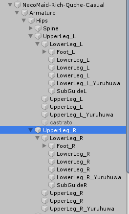
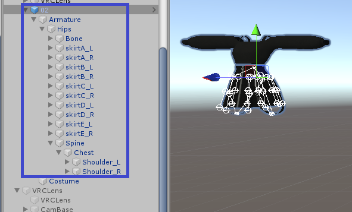
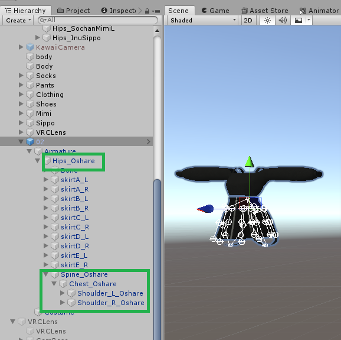
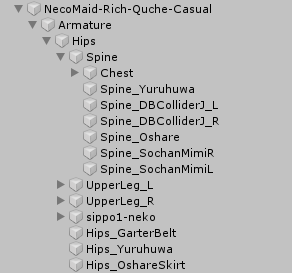

概要
ボーン名を変更しない場合、アバターのArmatureがどんどん肥大化していって、どのボーンがどの服飾のボーンなのかわからなくなります。
その場合、ある服飾がいらなくなったときに、どのボーンを削除すればいいのかわからず、手動で確認していくことになります。
見てください、私のArmature。 まったくわからない。

手間……手間……！！
「ボーン名の変更」とは？
例えばこの02という服は、次のようなボーン構成になっています。（可愛ですよねこの服～～！！✨）

このうち特有のボーン名を持たないボーン（Humanoidの命名に沿ったボーン）の名前の後ろに、_〇〇という文字列を追加していきます。
（今回の場合、Bone・skirt〇_〇といったボーンは特有の名前なので、対象外。気になるならこれらも対象にしていいと思います！）

【おまけ・宣伝】
この操作を自動化したUnityのEditor拡張をリリースしました！ アバター着せ替えツールが手に合わないとき、服がアバター着せ替えツールに対応していなかったりしたときは、どうぞご利用ください✨
【Unity・VRChat】AddBoneNamesSuffixes【子GameObjectの特定の名前にsuffixを追加】 - galaxy-sixth-sensey - BOOTH
そうすると、アバターのArmature内にあるボーンがどの服飾のものかもわかりやすくなるので、管理しやすいですね！

おわり。
……。
さてそろそろ現実逃避はやめて、どれのものなのかわからなくなった、不明なボーンの名前を手動で変更する作業に戻ります……。 まさしくこの記事に書いたことをやってこなかった、ツケでございます。 ……えーん。
この記事はこちらから修正リクエストを送ることができます。
アバター改変で服などを着せるするなら、絶対にボーン名を変更しておいた方がいい - github
ゴミ箱ボタンの左にある、鉛筆ボタンを押してね！